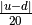

satorbit – Satellite Orbit Parameters¶
Analysis¶
The core issue here is to map orbital minutes to altitude. Given minutes, m, we can compute a z factor and the altitude, h.

Where R is the radius of the earth, 3963.34 miles.
Altitude.
radio horizon.
Apex angle of signal cone. .
Diameter of area covered by signal cone. .
Period. Input value,
 .
.orbital speed. miles per minute.
signal time. where
 is the speed
of light, here given as miles per second.
is the speed
of light, here given as miles per second.Doppler shift. .
Legacy Output¶
Some of these outputs are not correct; what’s relevant is the format.
ENTER: Period (time for single orbit) (87-157 min.) ? 94
Satellite altitude........................... 314 miles
Satellite signal map range (radio horizon)... 0 miles
Apex angle of satellite signal cone.......... 136°
Diameter of area covered by signal cone...... 0 miles
Period (time for single orbit)............... 94 minutes
Satellite orbital speed...................... 17155 miles per hour
= 0 feet per sec.
Up-and-Back signal time ..................... 0.0034 sec.
UPLINK frequency............................. 10.000 MHz
DOWNLINK frequency........................... 11.000 MHz
Approximate maximum Doppler shift............ 0 KHz
Legacy Notes¶
Different from the introduction seen in so many HamCalc programs, this program has “notes” at the end.
The calculations used in this program were interpolated from
graphs appearing on page 111 of the Electronics Data Book
publication No. 27 of the ARRL. The results of these calculations
are sufficiently accurate for fast reference purposes but may not
be suitable for very accurate satellite tracking.
Legacy Quirks¶
The calculation involves a set of approximations in a B array.

For Y, the comment is “HI & LO 1600 miles apart on 100 mi.increment graph”.

The calculation of the altitude is , where is an interpolated value between and .
It’s not clear why the B array of values are computed in advance at discrete intervals and then interpolated.